Spektroskopische Diagnostik in der Labormedizin
Prof. Dr. phil. nat. René Staritzbichler
29.10.26

Lernziele
- Spektroskopie als neuartiger Ansatz der Diagnostik kennenlernen
- Spektroskopische Methoden:
- Raman
- Infrarot
- UV/VIS
- Massenspektrometrie
- NMR
- Anwendungen der Ramanspektroskopie
- Personalisierte Laborwerte
- Bildgebung
- Probenverwechslungen
- Probenüberalterung
- Krankheitserkennung
Klassische Labormedizin
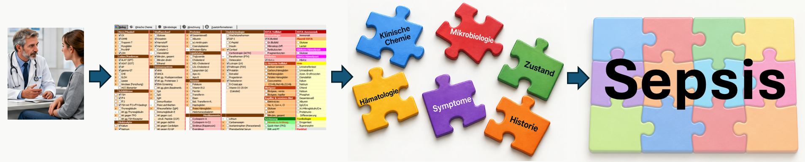

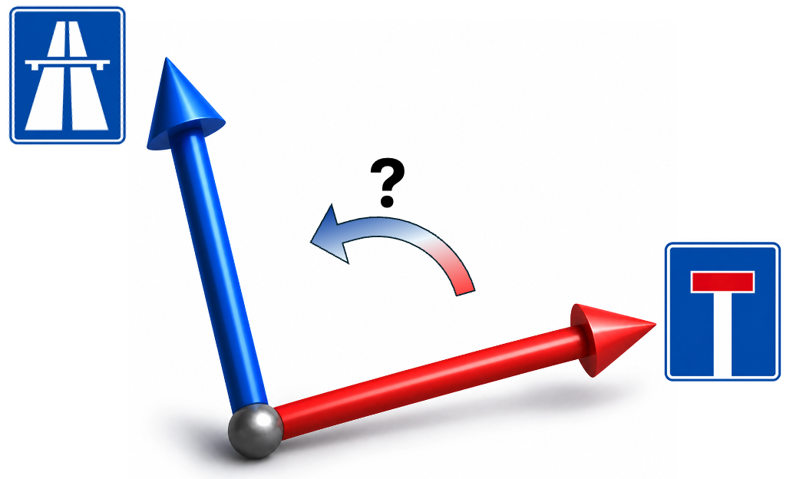
Gibt es einen direkteren Nachweis einer Krankheit?

Spektroskopie
- Optische Spektroskopie
- Raman, Infrarot, UV-VIS
- Massenspektrometrie
- Kernspinresonanz
Breitband-Diagnostik:
Biochemie ⇒ Physik
Ein Test, ein Wert ⇒ Gesamte Probe
⇒
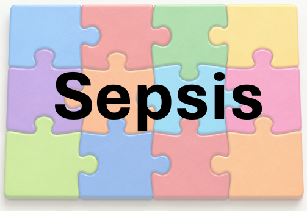
Optische Spektroskopie
- Absorptionsspektroskopie
- Infrarot
- UV-VIS
- Emissionsspektroskopie
- Fluoreszenz
- Inelastische Streuung
- Raman
Sowohl Raman- als auch Infrarot-Spektroskopie beschreiben
molekulare Schwingungen
Absorptions-Spektroskopie
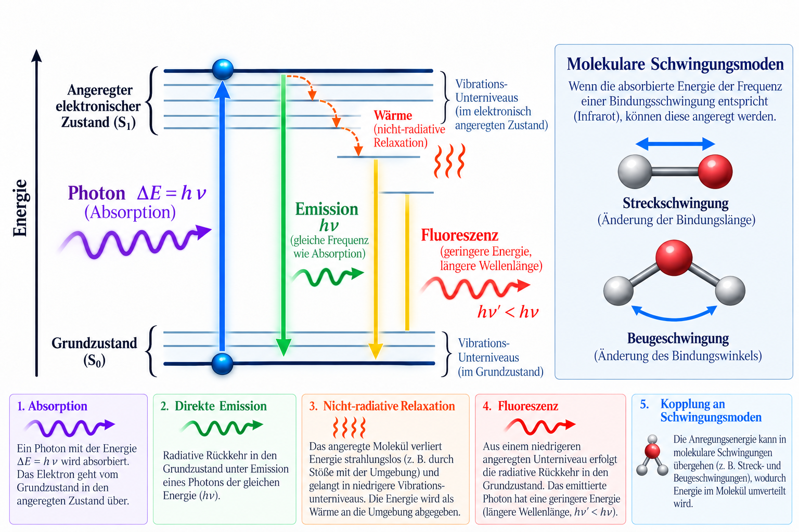
Absorptions-Spektroskopie
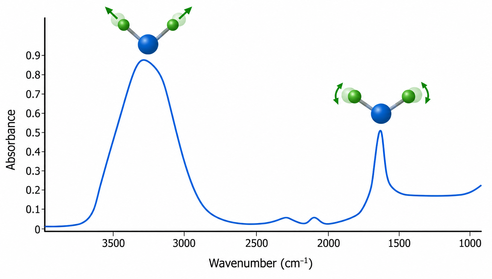
ATR - Attenuated Total Reflection (abgeschwächte Totalreflexion)
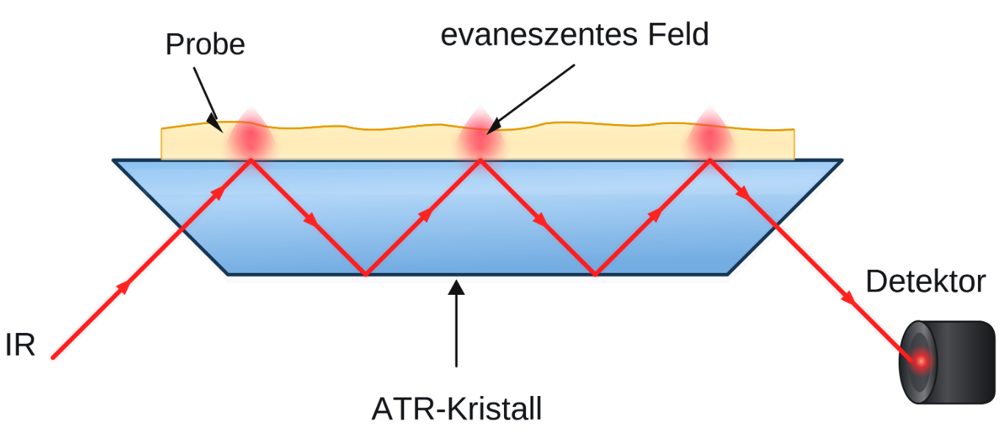
- IR-Licht wird in einem Kristall mit hohem Brechungsindex mehrfach totalreflektiert.
- An den Reflexionsflächen dringt ein evaneszentes elektromagnetisches Feld in die Probe ein.
- Eindringtiefe: ca. 0,5–3 µm, abhängig von Wellenlänge, Einfallswinkel und Brechungsindizes.
- Absorption durch Molekülschwingungen schwächt das reflektierte IR-Licht wellenzahlabhängig ab.
- Geeignet für Flüssigkeiten, Feststoffe und Gele; meist kaum Probenvorbereitung erforderlich.
- Kurze Eindringtiefe reduziert Probleme durch starke Absorption (z. B. Wasser).
- Wichtig: guter Kontakt zwischen Probe und Kristall.
Inelastische Streuung

Infrared- versus Raman-Spektroskopie

Komplementäre Spektren

- Raman
- Infrarot
Raman- vs. IR-Spektroskopie: Anwendbarkeit
| Aspekt | Raman | IR / FTIR |
|---|---|---|
| Bindungen | Besonders symmetrische, schwach polare Bindungen; z. B. C–C, S–S | Besonders polare Bindungen; z. B. C=O, O–H, C≡N |
| Strukturanalyse | Molekulare Fingerabdrücke, Kristallgitter und Polymorphie | Gut charakterisierter Fingerprint-Bereich; umfangreiche Datenbanken |
| Wässrige Proben | Gut geeignet; relativ geringe Störung durch Wasser | Starke Wasserabsorption; durch ATR teilweise kompensierbar |
| Probenarten | Feststoffe, Flüssigkeiten, Gele, Filme und Kristalle | Besonders geeignet für Flüssigkeiten mit ATR-IR |
| Prozessmessung | Glasfasersonden, Messung durch Fenster; auch bei hohen Drücken/Temperaturen | ATR-Eintauchsonden und Durchflusszellen; gut für Lösungsphasen |
| Signalstärke | Schwache Streusignale; geringe Konzentrationen oft schwierig | Häufig starke Absorption; gut für quantitative Analysen |
| Störfaktoren | Fluoreszenz kann Raman-Signale überlagern; mögliche Lasererwärmung | Keine Fluoreszenzstörung; Wasserabsorption und Signalsättigung möglich |
Massenspektrometrie
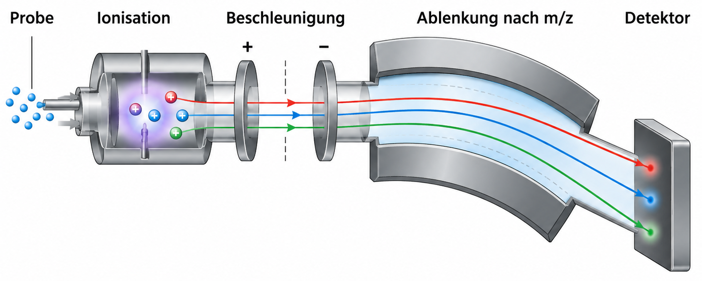
- EI: Elektronenionisation
- ESI: Elektronensprayionisation
- MALDI: Laserionisation
- CI: Chemische Ionisation
LC-MS Massenspektrometrie

Massenspektrometrie in der Labormedizin
- Klinische Chemie:
Steroidhormone, Vitamine und Metabolite - Therapeutisches Drug-Monitoring:
Medikamentenspiegel zur Dosisanpassung - Toxikologie:
Nachweis von Medikamenten, Drogen und Giftstoffen - Neugeborenen-Screening:
Hinweise auf angeborene Stoffwechselstörungen - Mikrobiologie:
MALDI-TOF-MS zur Identifizierung von Bakterien und Pilzen
NMR
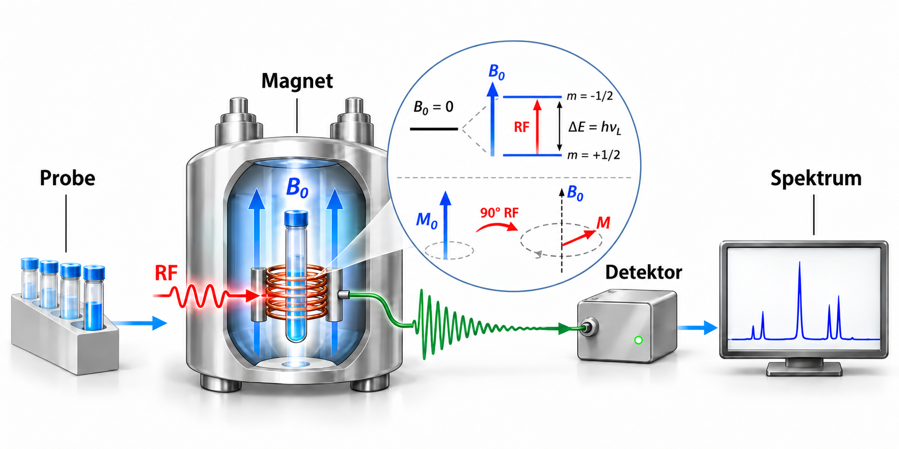
Spektroskopische Methoden in der Labormedizin
| Methode | Proben- vorbereitung |
Kosten (Gerät / Test) |
Messdauer | Diagnostischer Informationsgehalt | Signalqualität / Störungen |
|---|---|---|---|---|---|
| UV-VIS | Gering; automatisierte Reagenzzugabe | Mittel–hoch / gering | Sekunden bis Minuten | Gezielte Quantifizierung einzelner Analyte; sehr gut etabliert | Hohe Präzision / Störungen durch Hämolyse, Lipämie, Ikterus |
| IR (FTIR) |
Sehr gering bei ATR; ggf. Trocknung | Mittel / gering | Sekunden bis Minuten | Molekularer Fingerabdruck; in komplexen Proben begrenzte Spezifität | Starke Signale / Wasserabsorption und Bandenüberlagerung |
| Raman | Gering; oft direkte Messung möglich | Mittel–hoch / gering | Sekunden bis Minuten, teils länger | Molekularer Fingerabdruck; diagnostische Klassifikation möglich, noch wenig Routinevalidierung | Schwaches Signal / Fluoreszenz und Hintergrundrauschen |
| LC-MS/MS | Mittel–hoch; Extraktion, interne Standards, LC | Hoch / mittel–hoch | Mehrere Minuten je Probe | Sehr spezifische und sensitive Quantifizierung; mehrere Analyte gleichzeitig | Sehr hohe Empfindlichkeit / Matrixeffekte, Ionensuppression |
| NMR | Gering–mittel; Puffer und Referenz | Sehr hoch / gering–mittel | Minuten bis mehrere 10 Minuten | Breites, quantitatives Metabolitenprofil; geringe Spurenempfindlichkeit | Sehr reproduzierbar / geringe Sensitivität, Signalüberlagerung |
Angaben sind typische Größenordnungen. Messdauer ohne Probenlogistik und meist ohne Vorbereitung. Kosten und analytische Leistung sind methodenabhängig.
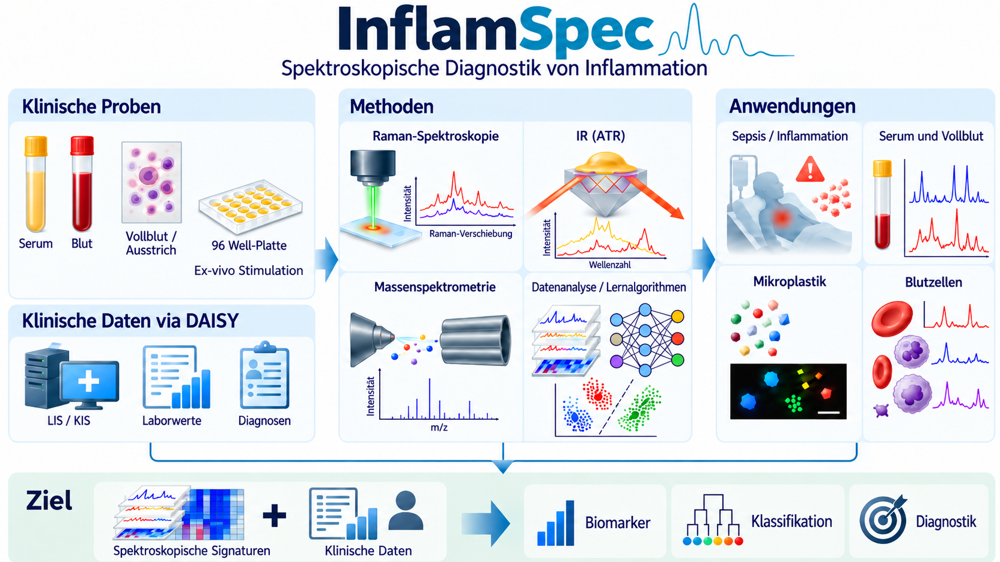
Strategie
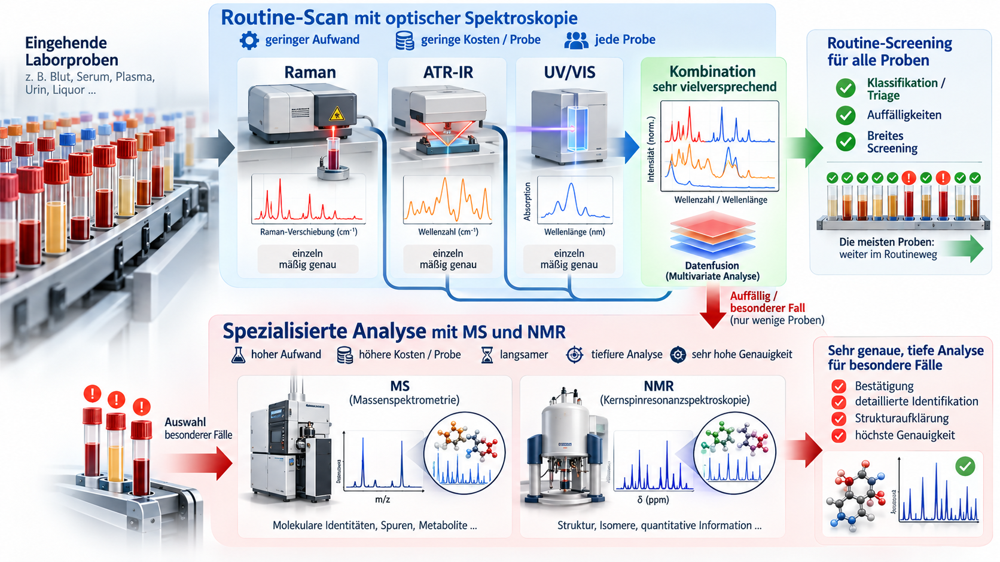
Anwendungen der Raman-Spektroskopie
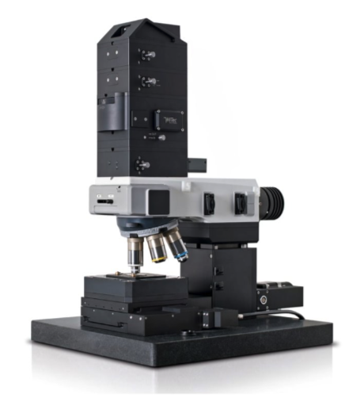
Präanalytische Fehler
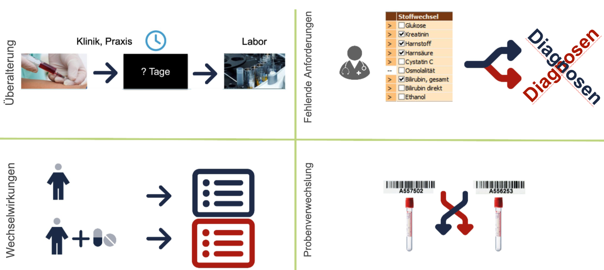
Zielsetzungen
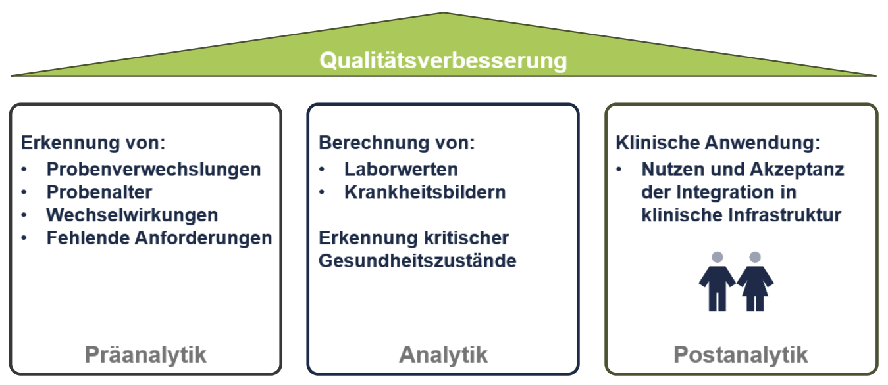
Anwendung
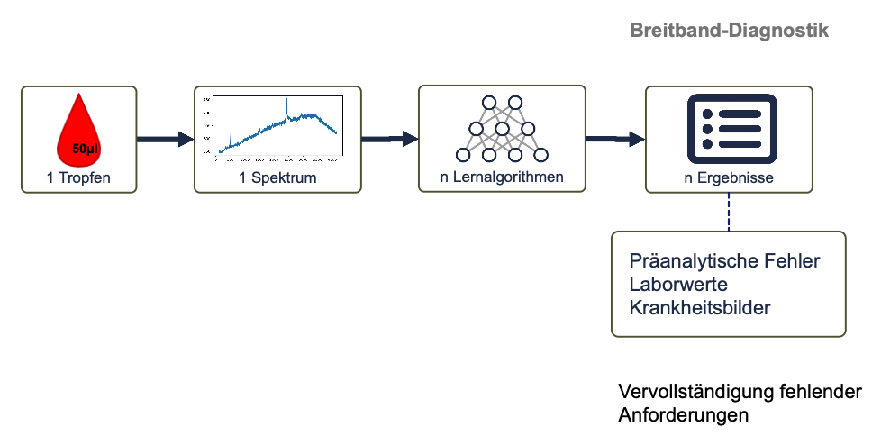
Parallele Diagnostik
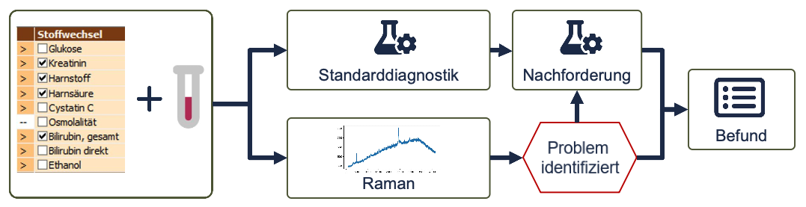
Erkannte Probleme können direkt zu Nachforderungen führen und weitere Diagnosezyklen vermeiden
Online Folien
Physik
Raman
DAISY

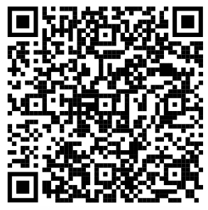
- https://renedominik.github.io/lehre/physik_labormedizin/
- https://renedominik.github.io/lehre/raman_spektroskopie/
- https://renedominik.github.io/lehre/daisy/